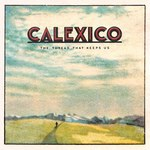

Quick Takes (January 2018)
Welcome to our first Quick Takes of 2018!
Carl and I pretty excited to get back to our favorite monthly routine. As it appears we've covered some solid choices this time around, though as always, some releases did leave us thoroughly disappointed. No Age is back with another noise-pop opus, making them 4 for 4 in my book. I also highly recommend The Spook School's C86-recalling How Could I Be Any Different? As for Carl, his top pick this month was tUnE-yArDs' delightfully quirky return. I thought he was far too generous with First Aid Kit's Americana-leaning snoozefest, though he was pretty on-point with Django Django's middling Marble Skies.
What were your favorite albums of the month of January? Anything we didn't get to review on our site that we should've? You can always reach us on facebook, or on our official twitter page. - Juan
...
Calexico
The Thread That Keeps Us
(Anti-)
Consistency can be a curse. Just ask Calexico, the roots-influenced Arizona duo who’ve been releasing records in one to two-year intervals for over twenty years now. It can spoil that feeling of newness you get from a fresh new act, but there’s also a good reason they’re still around: their musical travelogues always feel like a spontaneous vacation. There’s a theme attached to The Thread that Keeps Us as well - the duo vanished off to the Northern California coast to mark new territory and discover an unexplored potential. It does work to their advantage. Whereas their past two records, Algiers and Edge of the Sun, found refuge in cities like New Orleans and Mexico City, the duo intends to go back to their past sounds by virtue of that added experience. There’s more of an improvisational focus to a lot of Thread, where they take on themes such as immigration policy and ecological concerns with their usual storytelling flair. It does have a familiar, intuitive touch; this is Calexico, after all. But the duo never does things with little effort or care. [7/10] Juan Edgardo Rodríguez
 Django Django
Django Django
Marble Skies
(Ribbon Music)
The third LP from the agitated experimentalists of UK psych has as many dial shifts and styles as we’ve come to expect from them, but the overriding feeling after listening to Marble Skies – if you can keep up with the fatiguing volatility of it – is that when so much attention and diligence is paid to the concoction of the end product, it often lacks the quality and viscidity that you want from it. That’s not to say there isn’t an awful lot to admire on the record. Surface to Air is an infectious track that manages to be buoyant without compromising on its sleek, fashionably agile groove, and the vocals from Slow Club’s Rebecca Taylor – a.k.a. Self Esteem – add another new dimension to the band’s shape-shifting remit. Ultimately, Marble Skies is a hopscotch of metamorphosizing sounds that can be rewarding for the most part, but only if you can muster the energy to make it so. [6/10] Carl Purvis
 First Aid Kit
First Aid Kit
Ruins
(Columbia)
Swedish sisters Johanna and Klara Soderberg dropped their fourth record as First Aid Kit at the turn of the year with a delicate balance of the scorching motif of deep-south country music and the icy serenity of the Scandinavian winter. For fans of the duo, the songs of Ruins will announce a refinement as opposed to a redefining of their sound, whilst the songwriting is typically charming and resplendent. The sisters wrote the album following the breakdown of Klara’s relationship, and the affecting melodies and delicate harmonies provide – what sounds like from afar – a kind of catharsis that helps her towards an Americana-tinged resolution. The songs are generally grounded in old soul and early rock rhythms, never deviating too far from the amiable, polished waltz that allows the Soderberg sisters’ voices to ache beautifully. Ruins is an affecting, comforting listen, but not one that will imprint itself too vividly in the memory. [6/10] Carl Purvis
 The Go! Team
The Go! Team
Semicircle
(Memphis Industries)
In the fourteen years since The Go! Team’s lightning-in-a-bottle debut, I’ve made many observations that the best music – and by best that is obviously entirely subjective – is often the furthest thing away from the interminable ebullience and joy that Ian Parton’s Go! Team live by. In fact, to find a band that has a back-catalogue of consistently buoyant records of quality is almost like looking for a needle in a proverbial haystack. With SEMICIRCLE, Parton’s lo-fi, punky, irritatingly optimistic take on the sort of sample skit that The Avalanches have perfected is – in some parts – difficult to listen to without thinking “oh, fuck off.” The nostalgia lacks anything close to the authenticity that Thunder, Lightning, Strike achieved, and the sound of the 2018 version of The Go! Team struggles to get anywhere far from persistent annoyance. [4/10] Carl Purvis
 No Age
No Age
Snares Like a Haircut
(Drag City)
No Age return with a renewed vigor on Snares Like a Haircut. It’s been five years since the noise-punk duo released 2013’s An Object, which saw the duo of Dean Spunt and Randy Randall explore the ill-defined limits of art and commerce. The absence was necessary: the duo both became fathers, and presumably, due to contractual obligations they couldn’t meet, signed to Drag City after three hard-to-top releases through Sub Pop. Their call-and-response breakdowns are still as impassioned as ever on tracks like Drippy and Cruise Control, where they place the hooks and melodies right on the surface. The use of ambiance over their riotous songs isn’t just an asset, it’s also the essence of No Age, handled with seamless efficiency on cream-hued instrumentals like the title track and Third Grade Rave. This back-to-basics approach adds a new layer to their fractured, sublime noise on Snares Like a Haircut. The duo is older and more experienced, but their core conviction hasn’t changed. [8/10] Juan Edgardo Rodríguez
 Panda Bear
Panda Bear
A Day With the Homies
(Domino)
Noah Lennox’s latest furor is an extended play by rights, but a long play in both length and resourcefulness. With its release limited exclusively to vinyl and its low-end production pumping throbbing basslines through color-splashed playscapes, Lennox has ensured his latest work is as organic as it can possibly be. There have always been shadows cast from the overriding ebullience of Lennox’s work as Panda Bear, but with A Day With the Homies, the shadows are confined by a skyscraping sun, where elastic psychedelic bungees in and out of the surf and basks in its feverish gleam. Opening track Flight is the most sun-soaked of the five tracks that comprise the EP, where a tribal, artificially intelligent take on The Beach Boys are evoked by Lennox’s harmonies and sprightly groove. With A Day With the Homies, Lennox is a long way towards finalizing his festival sets for the summer. [7/10] Carl Purvis
 Salad Boys
Salad Boys
This is Glue
(Trouble in Mind)
Christchurch continues to be a hotbed for shaggy-haired musicians who worship the disaffected voices of classic college rock. And it’s easy to understand why, given how the city’s main progenitors remain a source of discovery - and have aged impeccably well - for those who want to learn outside of their American counterparts. Salad Boys apply their hooks with broad brushstrokes, which does reduce the sameness that sometimes plagues even the movement’s finest examples. One would assume that it’s due to a lack of focus, but Salad Boys disprove that idea on This is Glue by not conforming to set rules. There’s a heavy focus on jangly major chords that glide with ease (Hatred, Exaltation), which is expected, but that loose-limbed attitude does pay off when they crank up their guitars as if they’re running laps in the track (Blown Up, Psych Slasher). Their attempts at country-folk are less remarkable, causing This is Glue to droop towards its middle half, but Salad Boys do pick themselves up with aplomb rather than surrender to their sullen demeanor. [7/10] Juan Edgardo Rodríguez
Shopping
The Official Body
(Fat Cat)
Shopping prioritize music over politics. And yet, the London trio were put into an ideological pedestal after their previous two records, Consumer Complains and Why Choose, casually remarked a number of hot-button topics they treated as common sense. Why Choose occasionally expressed the concept of choice as an excuse to not say anything at all. But their laconic approach was also intriguing, as every elliptical thought was placed with thoughtful precision. The same cannot be said for The Official Body, though, in which they draft a sorting of worn-out cliches with a surface-level understanding of things. Repetition is considered their weakest strength, which isn't true at all - they introduce shrill synth textures and dub elements with a good understanding of technique. It does add the slightest variation to their acerbic post-punk, all rendered with a cheerful stance even if there’s an apparent loss of rage. Still, this party feels less exciting than the night before. [5/10] Juan Edgardo Rodríguez
 The Spook School
The Spook School
How Could I Be Any Different?
(Slumberland)
The Spook School haven’t changed their sound much on How Can I Be Any Different? Or at least that’s what their punchy pop punk sounds like at first glance; otherwise, there’s not a peppy chord progression or pounding drum beat that gets lost on their quick tempos without conveying a thoughtful emotion. Akin to their elder C86 compatriots The Wedding Present, the Glaswegian four-piece carry their frenetic anxiety through hard-driving anthems with unbridled joy. They follow that tradition swimmingly - beneath their optimistic jangle lies an honesty that affirms their beliefs: serious themes such as sexual abuse (Still Alive) and gender incongruence (Body) are expressed proudly and loudly, with a simplicity that undermines their political legitimacy. And of course, there’s always room for a gooey singalong about unrequited love. But outside of their reminiscences about troubled adolescence, which sometimes provide a gratingly innocent tone, How Could it Be Any Different? is otherwise brimful with lighthearted, yet meaningful songs that could actually make a difference. [7/10] Juan Edgardo Rodríguez
 tUnE-yArDs
tUnE-yArDs
I Can Feel You Creep Into My Private Life
(4AD)
Merrill Garbus’ fourth record as tUnE-yArDs is its own, redesigned art-pop metropolis. It’s a bustling place dazzlingly rich with colour, and Garbus’s towering assault of a vocal moves to its own ramshackling beat. With long time collaborator Nate Brenner officially acknowledged as a band-member and Mikaelin Blue Spruce recruited for mixing duties, the album’s sound is razor-sharp and alarmingly high in its definition. Opening track Heart Attack sees Garbus perform assertive vocal acrobatics around a disco piano and a perambulant groove. Lead single Look At Your Hands possesses one of the catchiest basslines you’re likely to hear this year, whilst agitated drums clatter under a edgy restraint. Garbus isn't shy in approaching the politics of being a white woman in America in typically confrontational fashion, and - like all of her previous work as tUnE-yArDs – her sound is a junksale of clutter and certified gems. I can feel you… is her most sonically sharp weapon to date, and full of plenty to get excited about if you rifle through it. [7/10] Carl Purvis
13 February, 2018 - 09:19 — No Ripcord Staff